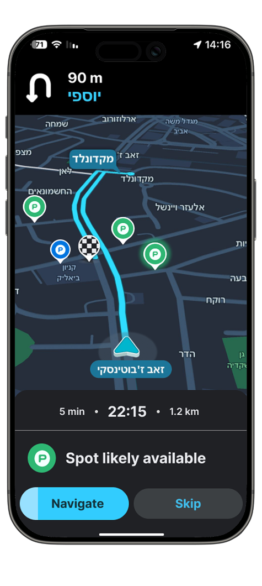
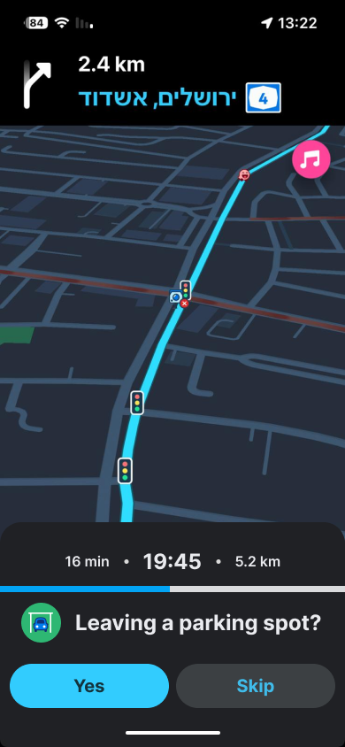
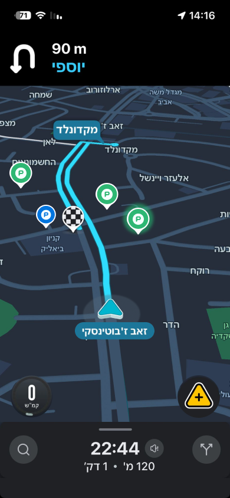
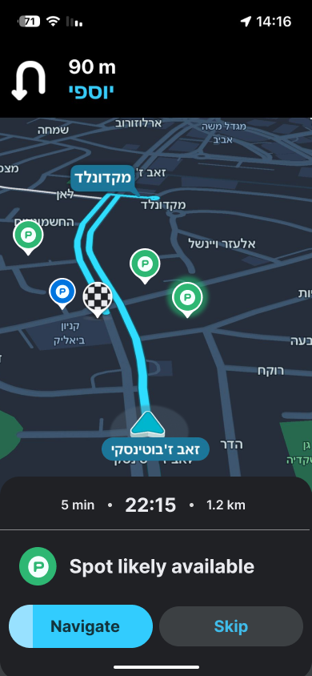
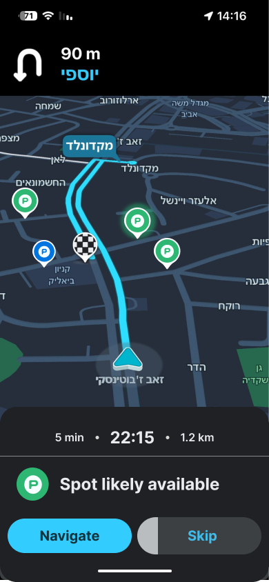

Feature Design · Waze
Street
Parking
A Waze feature concept for real-time street parking guidance - powered by community signals, built for the last mile.

Overview
A smarter moment.
As someone who lives in the city without private parking, I know the frustration of arriving at your destination... and realizing the drive still isn't over.
The endless circling, searching, and hoping someone might leave.
That made me think: if Waze already uses real-time community data to help drivers navigate traffic - why not use it to help people find street parking too?
The Problem
The most frustrating part of the drive happens last.
Navigation ends when you reach the destination. But finding a place to park is where drivers lose time, patience, and confidence. It's the part of the journey no one has fully solved - and Waze is no exception.
searching for a parking spot. Source: INRIX Global Traffic Scorecard
Parking anxiety creates a ripple effect: unnecessary traffic from circling, increased emissions, and a degraded driving experience at the exact moment it should feel resolved.
Current Experience
Waze gets you there, but doesn't help you park.
Waze recently added parking-related indicators near the destination. It's a step in the right direction - but the experience is still incomplete.
- Shows nearby parking lots with availability
- Displays parking icons near destination
- Lets you navigate to paid parking
- No real-time signal when a street spot opens
- No distinction between lots and street spots
- Parking icons appear without clear context
- No actionable guidance for the last 500m
How Might We
How might we help drivers discover potential street parking near their destination using real-time signals - without interrupting the driving experience?
The Solution
Community-powered, passive by design.
Street Parking is a lightweight Waze feature that surfaces real-time parking signals directly on the map. It works the same way Waze already handles traffic reports and hazards - community data, smart probability, no promises. When a driver leaves a street spot, a quiet prompt captures the signal. When a driver approaches their destination, the map shows where that spot might still be available.
Feature Experience
Five moments, one flow.
Driver leaves
a parking spot
When Waze detects a driver starting a new drive, a brief non-blocking prompt appears: "Leaving a parking spot?" The driver can confirm with Yes - or simply ignore it. The prompt dismisses itself automatically. Either way, the signal is captured.
Auto-dismiss · no forced interaction
Driver approaches
the destination
As the driver nears their destination, street parking indicators appear directly on the map. Green icons signal potential street spots. Blue icons remain for parking lots, as Waze already shows. A green icon with a subtle glow means the signal is recent - a driver may have just left that spot.
Green = street · Blue = parking lot
Driver taps a parking spot
When a driver taps on a green street parking icon on the map, Waze surfaces a navigation prompt - the same familiar "Navigate" button, now pointing to a street spot instead of a destination. No new UI to learn. Just the next natural step.
Familiar Waze navigation, new use case
High-confidence signal, navigate to a spot
When confidence is high - a signal is recent and close to the driver's destination - Waze shows a small bottom card: "Spot likely available." The driver can tap Navigate for a lightweight detour, or Skip to continue. No rerouting. No disruption.
"Spot likely available" - Navigate or Skip
User controls the feature
Street parking search can be turned on or off directly from Waze's settings. Users who don't want the prompts can opt out - keeping the experience fully in their control. No hidden behavior, no forced nudges.
Optional - always in the user's control
Design Decisions
The thinking behind the design.
No full-screen popup
The driver approaching their destination is in a high cognitive-load moment - actively navigating, watching for turns, managing traffic. A full-screen interruption would be dangerous and dismissive of the context. All interactions live at the bottom of the screen, non-blocking and glanceable.
→ Respect the driving context above all else.Passive by default, proactive only when confident
The system stays quiet most of the time. Street parking indicators appear on the map, but Waze only surfaces an active prompt when confidence is high - a signal is recent, nearby, and relevant. Interrupting the driver for weak signals would erode trust quickly.
→ Earn the driver's attention. Don't demand it.Green vs. blue - a clear visual distinction
Waze already uses blue icons for parking lots. Introducing a green icon for street parking creates an immediate, learnable distinction - without adding any new UI element the user needs to read or understand. The color does the work.
→ Green = street opportunity. Blue = parking lot."Likely available" - honest language builds trust
The feature never says "parking available." It says "Spot likely available." This distinction is intentional. The system is probabilistic - like all of Waze. Overpromising would break trust the first time a driver arrives and finds the spot taken. Wording that reflects probability protects the product's credibility.
→ "Likely" is not a weakness. It's honesty.Final Outcome
A street-level problem, solved by the street.
Street Parking adds a missing layer to the Waze experience - one that works with the product's existing behavior, not against it. By leveraging the community-based reporting model Waze already runs on, the feature turns every driver who leaves a parking spot into a real-time signal for every driver still searching. The result: less random circling, reduced uncertainty, and a driving experience that finally feels resolved from start to finish.
Back to Portfolio
← All ProjectsNext Project
Adopt A Mentor →